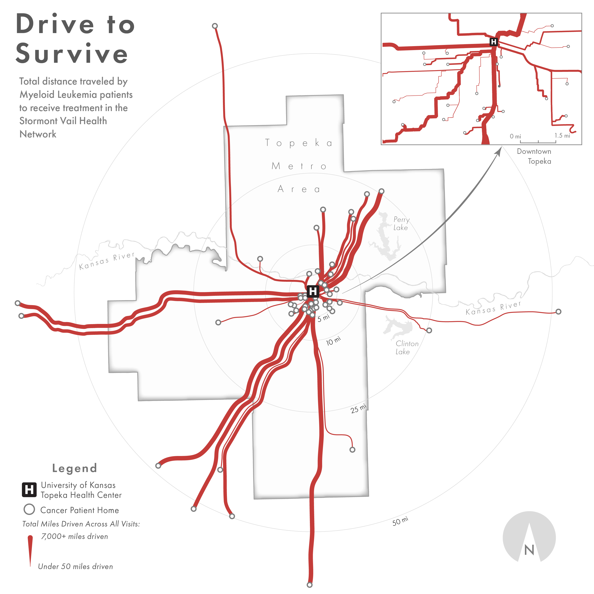

The Presentation
Myeloid Leukemia Patient Study
For DataFest 2026, I worked in a group with fellow students — Aidan DeLorenzo, Hayden Herrick, Owen Ou, and Riley Foushee — and, using R, QGIS, and Adobe Illustrator, created this map and presentation about patient journeys in the Stormont Vail Health system. The study traces the journeys of myeloid leukemia patients and shows how patients in rural areas must travel to Topeka for even simple things like laboratory draws, because of a slightly underdeveloped healthcare system in the region.
The map is built from a large dataset of patient records, using network analysis to trace each patient’s travel across all of their visits. Each red flow line connects a patient’s home to the medical center in Topeka, with line width scaled to the total miles driven — some patients traveled over 7,000 miles. Those miles add up because myeloid leukemia care never really pauses: patients need frequent blood tests before, during, and long after treatment, since those tests are how doctors judge whether the treatment is working and whether a different approach is needed, so lab work makes up a large share of their visits.
The presentation below the map puts those journeys in context — what myeloid leukemia is and how it is treated, and how mortality and healthcare coverage vary across Kansas, with rates highest in the rural areas whose residents face the longest drives.